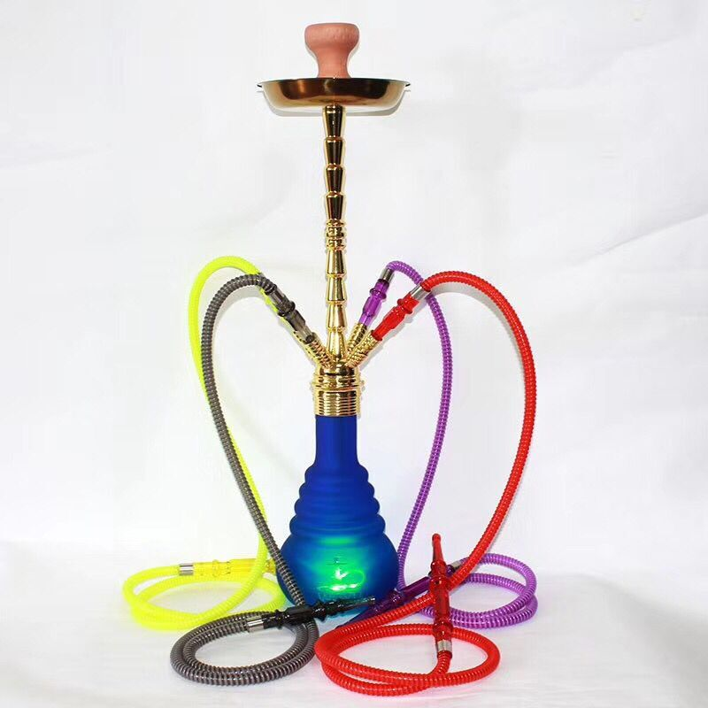
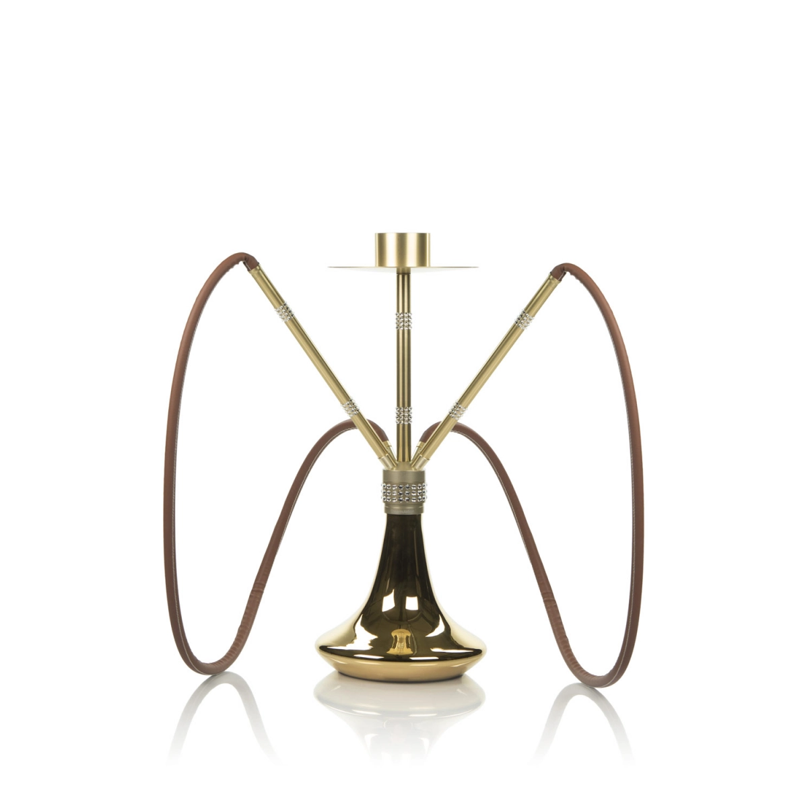
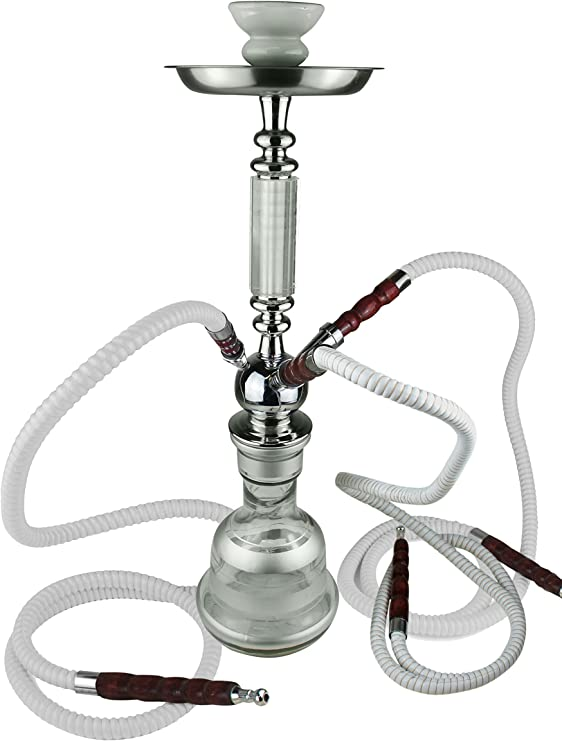

TRADICIONALES
Llamadas así por su estructura clásica parecidas a las cachimbas originales provenientes de la India y Oriente Medio. Entre sus características podemos distinguir:
-Están compuestas de latón, níquel o cualquier tipo de metal maleable.
-Por lo general, son hechas a mano.
-Su diseño, al ser hechas a mano, es único. Aunque pueden ser muy parecidas en su estructura.
-Su tamaño suele ser mediano o grande, rara vez son portátiles.
-El cierre del mástil y la base se hace con gomas a presión.
MODERNAS
Éstas están mas actualizadas a la epoca y cada día van innovando con diseños nuevos. Las grandes potencias de este tipo de shishas son Rusia y Alemania. Entre sus características tenemos:
-Están fabricadas principalmente de cristal.
-Su diseño es más innovador, y tienen formas menos tradicionales y mas contemporáneas, separándose de su forma clásica.
-El cierre del mástil y la base se hace con rosca.
SEGUN SUS TOMAS
Por último tanto en las tradicionales como en las modernas podemos encontrar cachimbas de 1 a 4 tomas para mangueras.  